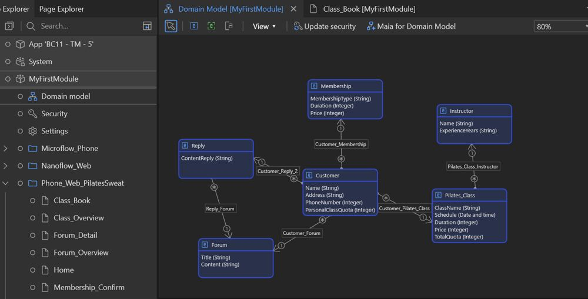
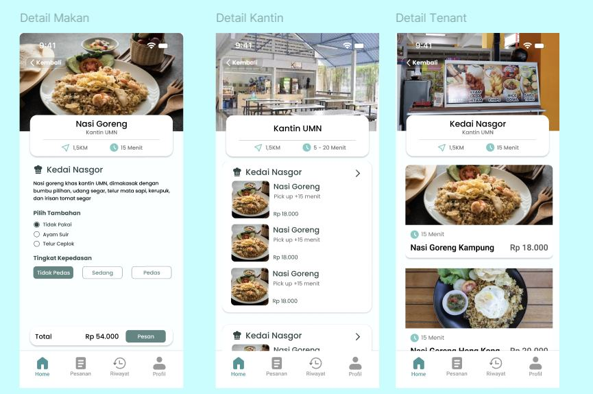

Mahasiswa Information Systems di BINUS University, stream Digital Technology Automation. Saya tertarik jadi application developer, web developer, dan systems analyst. Saya memilih desain minimalis karena fungsi sebuah aplikasi jadi mudah dipahami begitu pengguna membukanya.
2
Sertifikat
2
Proyek
5
Tools
2029
Target lulus (fast track)

PilatesSweat
MendixStudio Pro
Aplikasi simpel untuk kelas pilates. Pelanggan bisa memesan kelas, memilih membership, dan ikut forum. Domain model-nya memuat Customer, Membership, Pilates_Class, Instructor, Forum, dan Reply, lengkap dengan kuota kelas per pelanggan.

PesenIn
FigmaUI/UX
Desain aplikasi pre-order makanan kantin untuk banyak lokasi: kampus, sekolah, dan tempat lain. Sasaran utamanya mahasiswa yang malas mengantri. Pesan dari HP, lalu ambil makanan sesuai estimasi waktu.